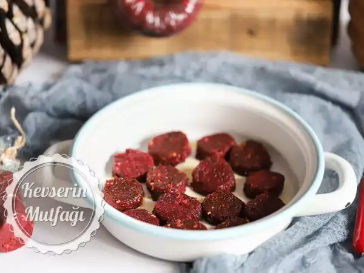

VEGAN SUCUK

Bugün vegan sucuk için gerekli malzemelri ve vegan sucuğun hazırlanışını öğreneceğiz.
Malzemeler
- 200 g haşlanmış kırmızı fasulye,
- 100 g haşlanmış pancar,
- 1/2 su bardağı kurutulmuş domates,
- 2 yemek kaşığı bulgur,
- 1 yemek kaşığı ince çekilmiş ceviz,
- 1 yemek kaşığı tapyoka nişastası,
- 3 diş sarımsak,
- 1 tepeleme tatlı kaşığı pul biber,
- 1 tatlı kaşığı kırmızı tatlı toz biber,
- 1/2 çay kaşığı kimyon,
- 1/2 çay kaşığı karabiber,
- 1/2 çay kaşığı yenibahar,
- Tuz.
Hazırlanışı
- Kurutulmuş domates, pancar ve fasulyeyi rondoya alıp krema kıvamına gelene kadar çekin,
- Tapyoka nişastasını ekleyip tamamen karışana kadar çekin,
- Karışımı bis sos tenceresine alın,
- Bulgur, ceviz ve tuzu ekleyin karıştırın,
- Kısık ateşte sürekli karıştırarak epey koyulaşana kadar pişirin (dibi tutmaya çok meyilli olacaktır, dibini kazıyarak karıştırın),
- Altını kapatıp minik minik doğradığınız sarımsakları, pul biber, toz biber, karabiber, kimyon ve yenibaharı ekleyip güzelce karıştırın,
- Karışım el dayanacak sıcaklığa geldikten sonra streç filme sarıp sucuk şekli verin.
- Buzdolabında bir hafta, dondurarak 6 aya kadar saklayabilirsiniz.